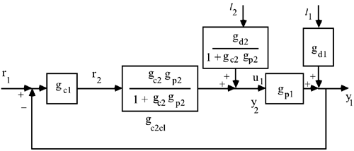

10.4 Cascade-Control Design
Tuning the cascade controller consists of two steps. First, tune the inner-loop controller [gc2(s)] based on the secondary process [gp2(s)] and use the inner-loop/closed-loop transfer function [Equation (10.2)] to find an effective process transfer function [Equation(10.4)] for tuning the outer-loop controller [gc1(s)].
The inner-loop control system design can be based on IMC-based PID or any other procedure, such as frequency-response gain and phase margins. Once the inner-loop is tuned, the effective outer-loop transfer function can be used to tune the outer-loop controller. Again, any control design procedure can be used.

Rules of Thumb for Cascade Control
Cascade control can be successfully used to reject secondary-process disturbances when the primary process has a much larger time constant and a time delay or RHP zero while the secondary process has a small time constant and little or no dead time or nonminimum-phase (RHP zeros) behavior. The most common cascade-control loop involves a flow controller as the inner loop. This type of loop easily rejects disturbances in fluid stream pressure, either upstream or downstream of the valve. The inner loop (secondary, slave loop) in a cascade-control strategy should be tuned before the outer loop (primary, master loop). After the inner loop is tuned, and closed, the outer loop should be tuned using knowledge of the dynamics of the inner loop. Cascade control is widely used on chemical processes, and should not be considered an "advanced control strategy." There is little or no advantage to using cascade control if the secondary process is not significantly faster than the primary process dynamics. In particular, if there is much dead time in the secondary process, or if there is an RHP zero, it is unlikely that cascade control will be much better than standard feedback control. Cascade control can be easily combined with other forms of control, such as feed-forward control. Any of your favorite methods can be used for tuning the inner and outer loops. Indeed, the IMC strategy can be used on either or both of the inner and outer loops.
|